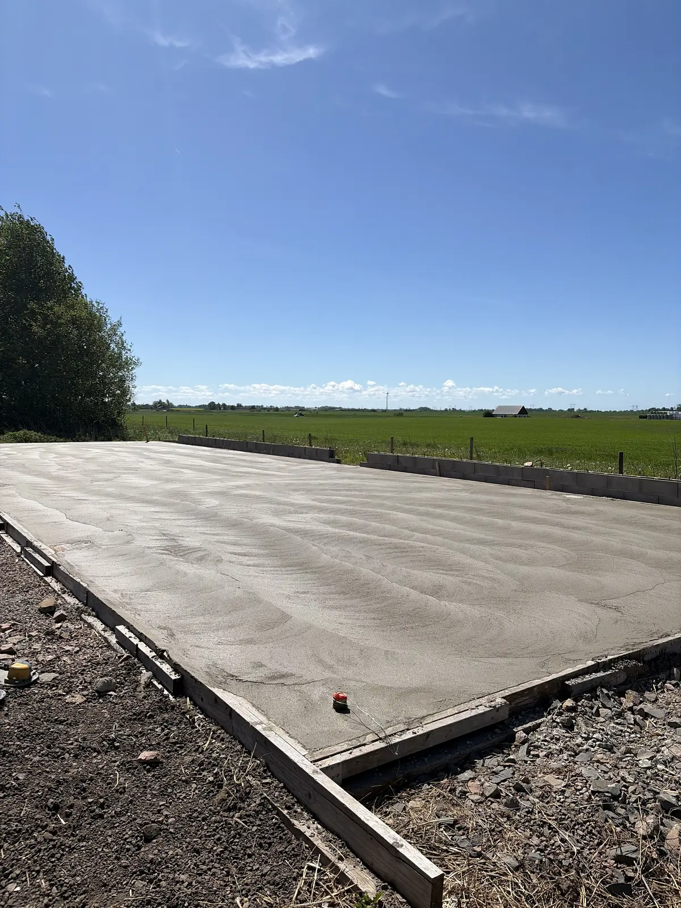
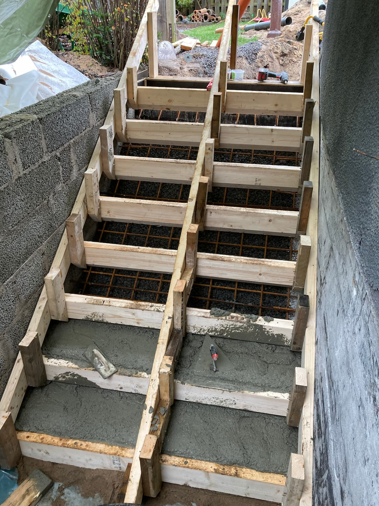
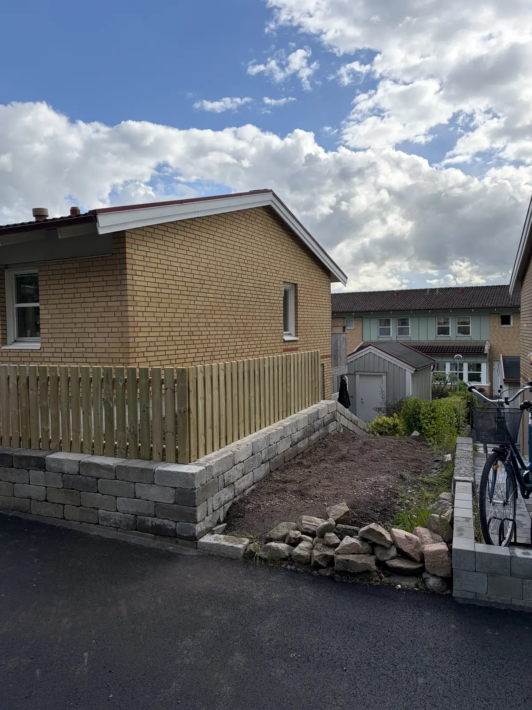
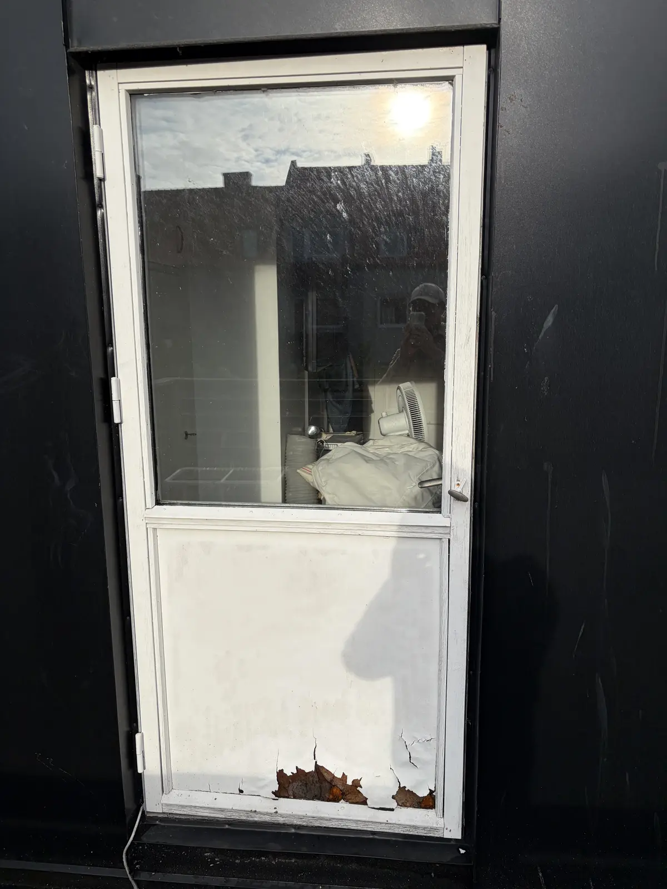

10+ års erfarenhet
Gedigen erfarenhet inom byggbranschen.
Din lokala byggfirma i Ängelholm
Behöver du en snickare i Ängelholm? Med över 10 års erfarenhet hjälper jag privatpersoner och företag med bygg, renovering och snickeriarbeten.
Jag tar emot nya uppdrag!
Gedigen erfarenhet inom byggbranschen.
Utbildad snickare med yrkesbevis.
Godkänd för F-skatt och ansvarsförsäkrad.
Kostnadsfri offert och hjälp med ROT-avdrag när villkoren är uppfyllda.
Våra byggtjänster
Renovering och ombyggnad av hus, bostäder och fastigheter.
Läs mer →Montering av kök, anpassningar och tillhörande snickeriarbeten.
Läs mer →Panelbyte, fasadarbeten och renovering av husets utsida.
Takrenovering och snickeriarbeten i samband med takprojekt.
Läs mer →Altanbyggen och uteplatser anpassade efter din fastighet.
Läs mer →Staket, trägrindar och insynsskydd efter dina önskemål.
Fönsterbyten, dörrbyten och tillhörande snickeriarbeten.
Bygg ut huset och skapa mer plats för dina behov.
Snickeri och byggarbeten vid nybyggnation.
Formbyggnad, armering, gjutning och grundarbeten.
Reparationer, underhåll och mindre byggarbeten.
Byggservice och underentreprenörsuppdrag för företag, fastighetsägare och bostadsrättsföreningar.
Referensprojekt
Ett urval av tidigare arbeten inom bygg, renovering, snickeri och betong. Låt dig inspireras inför ditt nästa byggprojekt.
Träaltan med trappsteg och insynsskydd, anpassad efter trädgårdens förutsättningar.

Renovering av tak på en befintlig utbyggnad.
Visa ytterligare bild ↗ Läs mer om takarbeten →
Platsbyggt staket med stående träribbor och integrerad grind.

Betongarbete för en stabil grund inför fortsatt byggnation.

Formbyggnad, armering och gjutning av en källartrappa i betong.

Trästaket anpassat efter tomtens nivåskillnader och befintliga mur.


Ett befintligt rum byggdes om till ett ljust och funktionellt kök. Projektet omfattade rivning, ombyggnation, gipsning, köksmontering och snickeriarbeten samt samordning av elektriker, VVS-montörer och plattsättare.
Läs mer om köksrenovering →

En sliten fönsterdörr ersatt med en ny. Ett mindre byggprojekt som gör stor skillnad.
Hör av dig så diskuterar vi ditt nästa byggprojekt.
Begär kostnadsfri offertOm F. Bergstrand Bygg AB
Jag heter Fredrik och driver F. Bergstrand Bygg AB med utgångspunkt i Ängelholm.
Jag är utbildad snickare med yrkesbevis och har över 10 års erfarenhet inom byggbranschen. Hos mig får du personlig kontakt direkt med hantverkaren.
Jag hjälper privatpersoner, företag, bostadsrättsföreningar och andra byggföretag med både små och stora byggprojekt.
Berätta om ditt projektArbetsområde
Jag utgår från Ängelholm och arbetar i nordvästra Skåne och södra Halland, bland annat i Båstad, Höganäs, Helsingborg och Klippan. Jag tar även uppdrag upp mot Halmstad och söderut mot Landskrona.
Kontakta mig gärna för att diskutera ditt projekt.
Kostnadsfri offert
Hör av dig och berätta vad du behöver hjälp med. Jag lämnar kostnadsfri offert och hjälper dig gärna att hitta en lösning.
F. Bergstrand Bygg AB
Ängelholm